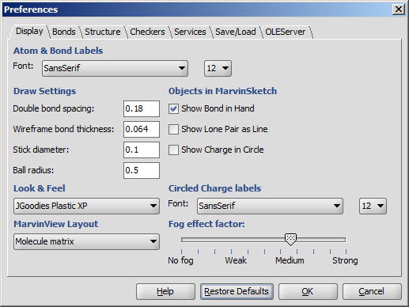

MarvinView : Display

- Atom & Bond labels values are used as the font type and size of atom labels, bond labels such as the "C/T" label, or query property labels of atoms, etc.
- Double bond spacing is a gap between two lines/sticks representing a double or triple bond. It is measured in Angstroms.
- Wireframe bond thickness is the width of bonds in wireframe mode. It is measured in Angstroms.
- Stick diameter is the width of bonds in stick mode in Angstroms.
- Ball radius is the size of atom spheres in Ball and Stick draw type, measured in Angstroms.
- Look & Feel allows changing the visual appearance of GUI components. The available options are: Metal, Nimbus, CDE/Motif, JGoodies Plastic, JGoodies Plastic XP, and the native Look & Feels (Windows, Windows Classic, Aqua) based on the underlying operating system.
- MarvinView Layout sets the default layout to Automatic, Molecule matrix or Spreadsheet.
- Show Bond in Hand, when checked, show the current bond type under the mouse cursor like template structures.
- Show Lone Pair as Line, when checked, shows lone pairs on the canvas as lines.
- Show Charge in Circle, when checked, displays a circle around around each charge symbol.
- Circled Charge labels values are used as the font type and size of the circled charge symbols.
- Fog effect factor: manual setting of the fading strength. No fog: all regions of the structure is displayed with the same line strength and color. Strong effect: the fading is at its maximum (molecule is only slightly visible at the far end).